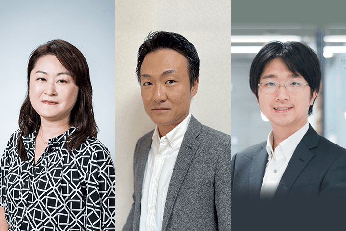

2022/11/26 (土) 14:30 ～ 16:00
会場：セミナー会場B
2014年に「日経ウーマノミクス・プロジェクト」の一環としてスタートし、今年で9年目を迎える「WOMAN EXPO」。企業の在り方や人々の価値観は大きく変化していますが、激動の時代にあっても変わらず前を向く女性たちに、今回も「新たな出会いの場」を提供します。
人と人が顔を合わせ、集まることが難しくなった今だからこそ、直に聴き、触れ、そこで得られる何かを探しに来てみませんか。「働く」「学ぶ」「健康・美容」をテーマにしたセミナーと、企業の製品・サービスが体感できる展示ブースをそろえ、11月26日（土）に東京ミッドタウンでお待ちしています。
| 名称 | WOMAN EXPO 2022 Winter |
|---|---|
| 会期 | 2022年11月26日（土）10：00~20：00（会場ブース展示は17：00まで）予定
|
| 主催 | 日本経済新聞社、日経BP |
| 協力 | テレビ東京、BSテレビ東京 |
| リアル開催会場 | 東京ミッドタウン・ホール
|
| リアル開催会場への入場について |
事前登録制。 この公式サイトにて申し込みを受け付け中。
|
東京ミッドタウン ホール＆カンファレンス
住所：〒107-0052 東京都港区赤坂9-7
詳しいアクセス方法は、東京ミッドタウンの公式サイトをご確認ください。
https://www.tokyo-midtown.com/jp/access/public-transport/